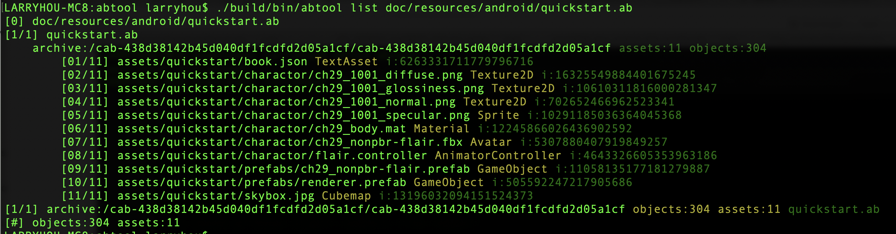
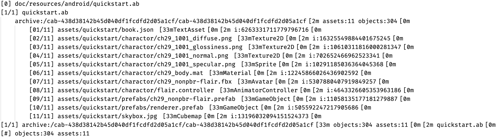
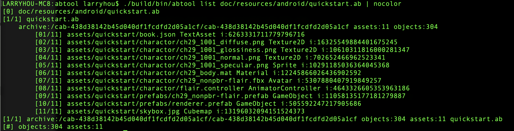

第三章 命令详解
截止文档撰写日起已有20多个内置命令，它们均是在解决资源问题过程中逐渐增加和完善的，具有很强的实用性。大部分命令运行过程中输出到终端的日志都是有颜色样式的，这个设计主要是根据信息的重要性做不同的高亮突出显示，方便在日志里面找到有用的信息。当然，也强烈建议您把终端设置为黑色背景样式，不然颜色显示会比较奇怪，因为黑色背景为终端显示样式的调试环境。

然而，在有些情况下，我们需要对工具输出的日志做进一步分析，这个时候我们是不希望有颜色高亮的，因为这些颜色都是通过颜色控制符1实现的，这会让日志里面多出一些方括号[的字符，如下图显示看起来比较杂乱，有可能会让下游的分析工具产生不符合预期的结果。

不过工程根目录里的nocolor.cpp的小工具可以轻松去掉终端的颜色样式，该工具含代码格式只有26行C++代码，非常轻量高效。
#include <iostream>
#include <string>
int main(int argc, char* argv[])
{
std::string pipe;
while (std::getline(std::cin, pipe))
{
auto cursor = pipe.begin();
for (auto iter = pipe.begin(); iter != pipe.end(); iter++)
{
if (*iter == '\e' && *(iter+1) == '[')
{
++iter; // [
++iter; // d
++iter; // m
if (*iter != 'm') { ++iter; }
continue;
}
*cursor++ = *iter;
}
*cursor = 0;
std::cout << pipe.data() << std::endl;
}
return 0;
}
可以通过如下终端命令快速编译。
clang++ -std=c++11 nocolor.cpp -o/usr/local/bin/nocolor
使用起来也十分方便，只需命令末尾追加管道。
abtool list doc/resources/android/quickstart.ab | nocolor

1. https://misc.flogisoft.com/bash/tip_colors_and_formatting ↩